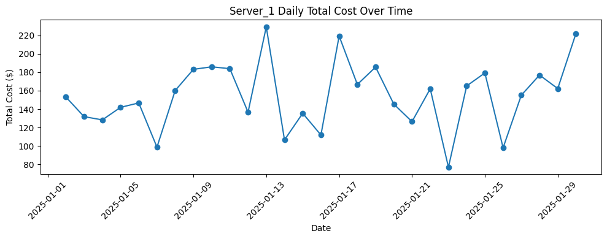
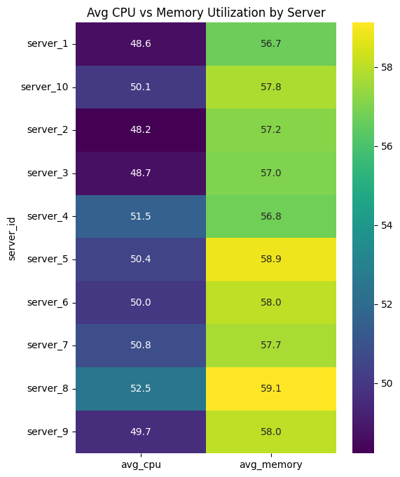
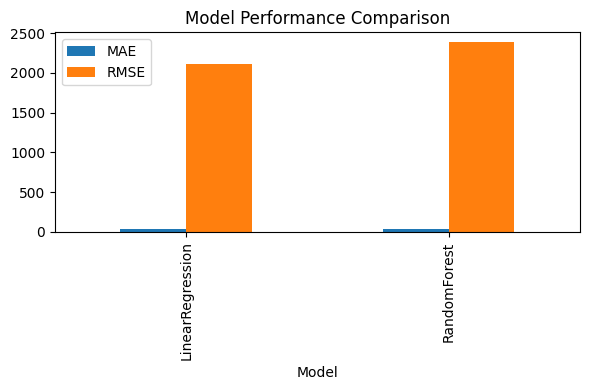

Data Center Cost Analysis#
This notebook performs the full assignment:
Data Cleaning & Feature Engineering
Machine Learning Modeling
Visualization & Reporting
Task 1: Data Cleaning & Feature Engineering#
Simulate dataset
Remove missing values and outliers
Create
high_utilizationflagAggregate by day and server
Save to
daily_summary.csv
import pandas as pd
import numpy as np
from datetime import datetime, timedelta
from scipy.stats import zscore
# Simulate data
n_servers = 10
n_records = 5000
start_date = datetime(2025, 1, 1)
timestamps = [start_date + timedelta(hours=np.random.randint(0, 24*30)) for _ in range(n_records)]
server_ids = [f"server_{np.random.randint(1, n_servers+1)}" for _ in range(n_records)]
cpu_usage = np.random.uniform(10, 90, n_records)
memory_usage = np.random.uniform(20, 95, n_records)
disk_io = np.random.uniform(0.1, 1.5, n_records)
network_io = np.random.uniform(0.05, 2.0, n_records)
power_kwh = cpu_usage * 0.5 + memory_usage * 0.2 + np.random.normal(0, 5, n_records)
cost_per_kwh = np.random.uniform(0.10, 0.20, n_records)
cooling_cost = power_kwh * 0.1
total_cost = power_kwh * cost_per_kwh + cooling_cost
df = pd.DataFrame({
"timestamp": timestamps,
"server_id": server_ids,
"cpu_usage": cpu_usage,
"memory_usage": memory_usage,
"disk_io": disk_io,
"network_io": network_io,
"power_kwh": power_kwh,
"cost_per_kwh": cost_per_kwh,
"cooling_cost": cooling_cost,
"total_cost": total_cost
})
# Clean data
df_clean = df.dropna()
for col in ["cpu_usage", "memory_usage", "total_cost"]:
df_clean = df_clean[(np.abs(zscore(df_clean[col])) < 3)]
# Feature engineering
df_clean["high_utilization"] = ((df_clean["cpu_usage"] > 80) | (df_clean["memory_usage"] > 90)).astype(int)
df_clean["date"] = df_clean["timestamp"].dt.floor("D")
daily_summary = df_clean.groupby(["date", "server_id"]).agg(
avg_cpu=("cpu_usage", "mean"),
avg_memory=("memory_usage", "mean"),
total_power=("power_kwh", "sum"),
total_cost=("total_cost", "sum"),
high_util_days=("high_utilization", "sum")
).reset_index()
daily_summary.to_csv("daily_summary.csv", index=False)
daily_summary.head()
| date | server_id | avg_cpu | avg_memory | total_power | total_cost | high_util_days | |
|---|---|---|---|---|---|---|---|
| 0 | 2025-01-01 | server_1 | 42.447054 | 49.626900 | 712.696956 | 169.641931 | 1 |
| 1 | 2025-01-01 | server_10 | 62.461287 | 59.723093 | 558.094742 | 146.007586 | 3 |
| 2 | 2025-01-01 | server_2 | 51.905196 | 61.041802 | 564.350248 | 135.236463 | 3 |
| 3 | 2025-01-01 | server_3 | 52.690527 | 51.737684 | 459.876024 | 109.461767 | 3 |
| 4 | 2025-01-01 | server_4 | 52.180068 | 58.341186 | 638.592934 | 156.731798 | 4 |
daily_summary
| date | server_id | avg_cpu | avg_memory | total_power | total_cost | high_util_days | |
|---|---|---|---|---|---|---|---|
| 0 | 2025-01-01 | server_1 | 42.447054 | 49.626900 | 712.696956 | 169.641931 | 1 |
| 1 | 2025-01-01 | server_10 | 62.461287 | 59.723093 | 558.094742 | 146.007586 | 3 |
| 2 | 2025-01-01 | server_2 | 51.905196 | 61.041802 | 564.350248 | 135.236463 | 3 |
| 3 | 2025-01-01 | server_3 | 52.690527 | 51.737684 | 459.876024 | 109.461767 | 3 |
| 4 | 2025-01-01 | server_4 | 52.180068 | 58.341186 | 638.592934 | 156.731798 | 4 |
| ... | ... | ... | ... | ... | ... | ... | ... |
| 295 | 2025-01-30 | server_5 | 57.911595 | 72.495563 | 942.746947 | 241.558612 | 6 |
| 296 | 2025-01-30 | server_6 | 63.186048 | 59.820546 | 868.003137 | 218.294190 | 7 |
| 297 | 2025-01-30 | server_7 | 50.208931 | 64.071204 | 444.420173 | 115.041177 | 4 |
| 298 | 2025-01-30 | server_8 | 55.599822 | 65.610635 | 611.967735 | 152.282406 | 2 |
| 299 | 2025-01-30 | server_9 | 54.652201 | 60.092939 | 608.279677 | 150.382299 | 3 |
300 rows × 7 columns
Task 2: Machine Learning Modeling#
Prepare lag features to predict next-day total cost per server
Train/Test split by date
Compare Linear Regression and Random Forest
Evaluate with MAE, RMSE, R²
from sklearn.linear_model import LinearRegression
from sklearn.ensemble import RandomForestRegressor
from sklearn.metrics import mean_absolute_error, mean_squared_error, r2_score
# Prepare lag features
daily_summary = daily_summary.sort_values(["server_id", "date"])
daily_summary["prev_avg_cpu"] = daily_summary.groupby("server_id")["avg_cpu"].shift(1)
daily_summary["prev_avg_memory"] = daily_summary.groupby("server_id")["avg_memory"].shift(1)
daily_summary["prev_total_power"] = daily_summary.groupby("server_id")["total_power"].shift(1)
daily_summary["prev_high_util_days"] = daily_summary.groupby("server_id")["high_util_days"].shift(1)
daily_summary = daily_summary.dropna()
features = ["prev_avg_cpu", "prev_avg_memory", "prev_total_power", "prev_high_util_days"]
X = daily_summary[features]
y = daily_summary["total_cost"]
# Train/Test split
unique_dates = sorted(daily_summary["date"].unique())
split_idx = int(len(unique_dates) * 0.8)
train_dates = unique_dates[:split_idx]
test_dates = unique_dates[split_idx:]
X_train = X[daily_summary["date"].isin(train_dates)]
X_test = X[daily_summary["date"].isin(test_dates)]
y_train = y[daily_summary["date"].isin(train_dates)]
y_test = y[daily_summary["date"].isin(test_dates)]
# Models
models = {
"LinearRegression": LinearRegression(),
"RandomForest": RandomForestRegressor(n_estimators=100, random_state=42)
}
results = []
for name, model in models.items():
model.fit(X_train, y_train)
preds = model.predict(X_test)
mae = mean_absolute_error(y_test, preds)
rmse = mean_squared_error(y_test, preds)
r2 = r2_score(y_test, preds)
results.append((name, mae, rmse, r2))
import pandas as pd
pd.DataFrame(results, columns=["Model", "MAE", "RMSE", "R2"])
| Model | MAE | RMSE | R2 | |
|---|---|---|---|---|
| 0 | LinearRegression | 37.508539 | 2115.147001 | -0.133376 |
| 1 | RandomForest | 39.424097 | 2391.141579 | -0.281265 |
Task 3: Visualization & Reporting#
Plot time series of total cost for a sample server
Heatmap of avg CPU vs Memory by server
Bar chart comparing MAE & RMSE
import matplotlib.pyplot as plt
import seaborn as sns
# Time series for server_1
server1 = daily_summary[daily_summary["server_id"] == "server_1"]
plt.figure(figsize=(10,4))
plt.plot(server1["date"], server1["total_cost"], marker="o")
plt.title("Server_1 Daily Total Cost Over Time")
plt.xlabel("Date")
plt.ylabel("Total Cost ($)")
plt.xticks(rotation=45)
plt.tight_layout()
plt.show()
# Heatmap of avg CPU vs memory
pivot = daily_summary.groupby("server_id")[["avg_cpu", "avg_memory"]].mean()
plt.figure(figsize=(6,8))
sns.heatmap(pivot, annot=True, fmt=".1f", cmap="viridis")
plt.title("Avg CPU vs Memory Utilization by Server")
plt.show()
# Performance comparison bar chart
perf_df = pd.DataFrame(results, columns=["Model", "MAE", "RMSE", "R2"]).set_index("Model")
perf_df[["MAE", "RMSE"]].plot(kind="bar", figsize=(6,4))
plt.title("Model Performance Comparison")
plt.tight_layout()
plt.show()


